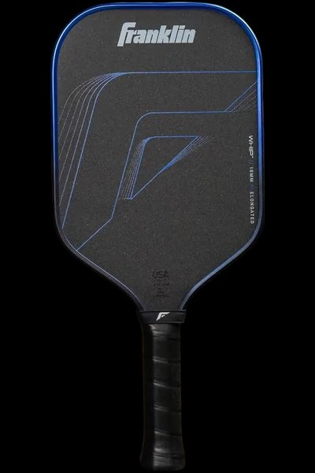

Best pickleball paddles for tennis elbow, ranked by measured vibration
Most “best paddle for tennis elbow” lists are based on feel. We put sensors on the handle and the wrist and measure the shock and buzz that actually reach your arm, then turn them into one number: the Arm Score. Higher is easier on the arm, and the reference paddle (Grit E2 CF (new)) scores 100.
The ranking: new paddles we've measured
Lower is better for shock, buzz and wrist twist. Tested Nov 21, 2026, one session (Franklin Dynasty Whip: Nov 23, second tester). Tap a paddle to see its X-ray.
| # | Paddle | Arm Score | Verdict | Shock to wrist (g) | Buzz at wrist (g) | Wrist twist (°/s) |
|---|---|---|---|---|---|---|
| 1 | 133 | Most arm-friendly | 1.89 | 0.24 | 406 | |
| 2 | 113 | Arm-friendly | 1.70 | 0.60 | 352 | |
| 3 |  Franklin Dynasty Whip Second tester | 101 | Firmer | 1.88 | 0.81 | 327 |
| 4 | 100 | Firmer | 2.15 | 0.58 | 427 | |
| 5 | 99 | Firmer | 2.27 | 0.59 | 355 |
We also measured Evolv (6 months of use) and Speedup Tide 14L (6 months of use). Those were used paddles (months of play), so they are left out of this ranking of new paddles. See them on the Arm Score page.
What we learned
- The Evolv (6 months of use) and the RPM Jade are the most arm-friendly so far; both Grit E2 CF versions are the firmest.
- Off-center hits sent 38–114% more shock to the wrist than center hits; the Evolvs were the most forgiving and the RPM Jade the least.
- No grip upgrade reduced the shock or buzz reaching the wrist. Grips are about feel and fit, not shock protection. A little lead helped stability. For arm comfort, the paddle matters far more than the grip.
- A stiff face is not automatically harsh on the arm. The Jade and the Evolvs are among both the stiffest and the most arm-friendly.
Questions people ask
What is the best pickleball paddle for tennis elbow?
Of the new paddles we have measured so far, the RPM Jade has the highest Arm Score: 133 (reference paddle = 100), which combines the shock, buzz and twist reaching the wrist. We are still testing, so the list will grow. Comfort also depends on grip size, swing and how often you play.
Do grips or overgrips help tennis elbow?
No grip upgrade reduced the shock or buzz reaching the wrist. Grips are about feel and fit, not shock protection. A little lead helped stability. For arm comfort, the paddle matters far more than the grip.
Do off-center hits matter?
Off-center hits sent 38–114% more shock to the wrist than center hits; the Evolvs were the most forgiving and the RPM Jade the least. Hitting the sweet spot more often, or picking a more forgiving paddle, keeps more shock away from your arm.
Are foam core paddles easier on the arm?
Foam cores are often sold as arm-friendly, but feel is not a measurement. We have X-rayed 53 paddles with foam in the core; only the paddles in the table above have a measured Arm Score so far.
Keep going
- Full Arm Score results: off-center hits, face stiffness and the grip test
- Foam core paddles we've X-rayed
- Measured swing weight and twist weight
- Get your paddle Rx: our paddle finder